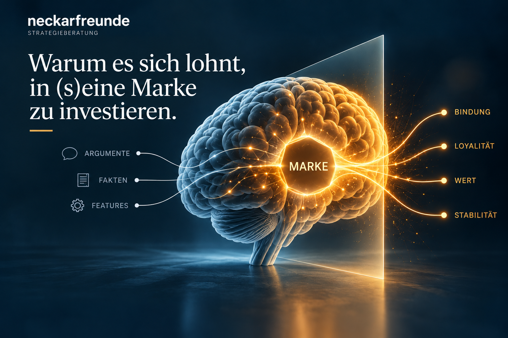

Gedankenkarussell stoppen. Das Buch ist da.
Ihsan Khalil hat 20 Jahre an einer Methode gearbeitet, die den Kopf wieder frei macht. Jetzt steht sie in einem Buch.
Perspektive lesen →Ihsan Khalil hat 20 Jahre an einer Methode gearbeitet, die den Kopf wieder frei macht. Jetzt steht sie in einem Buch.
Perspektive lesen →
Seit Januar war Pause. Jetzt geht es weiter. Die erste neue Folge: zehn Minuten über Emotionen, aufgenommen im Auto.
Perspektive lesen →
Der Vater will loslassen. Der Sohn will übernehmen. Trotzdem bewegt sich seit einem Jahr nichts. Über Nachfolgen, die an Menschen hängen und selten an Prozessen.
Perspektive lesen →
KI, New Work, Purpose. Jeder Trend verspricht Gold. Bevor Budget fließt, lohnt sich eine Runde mit fünf Fragen.
Perspektive lesen →
Ihsan Khalil ist jetzt Systemischer Coach (CAS). Warum ein Strategieberater nach 30 Jahren noch einmal eine Ausbildung macht.
Perspektive lesen →
Viele Unternehmen arbeiten gern an ihrer Marke. Mit ihr arbeiten sie selten. Vier Gründe, die Marke als Kapital zu führen.
Perspektive lesen →